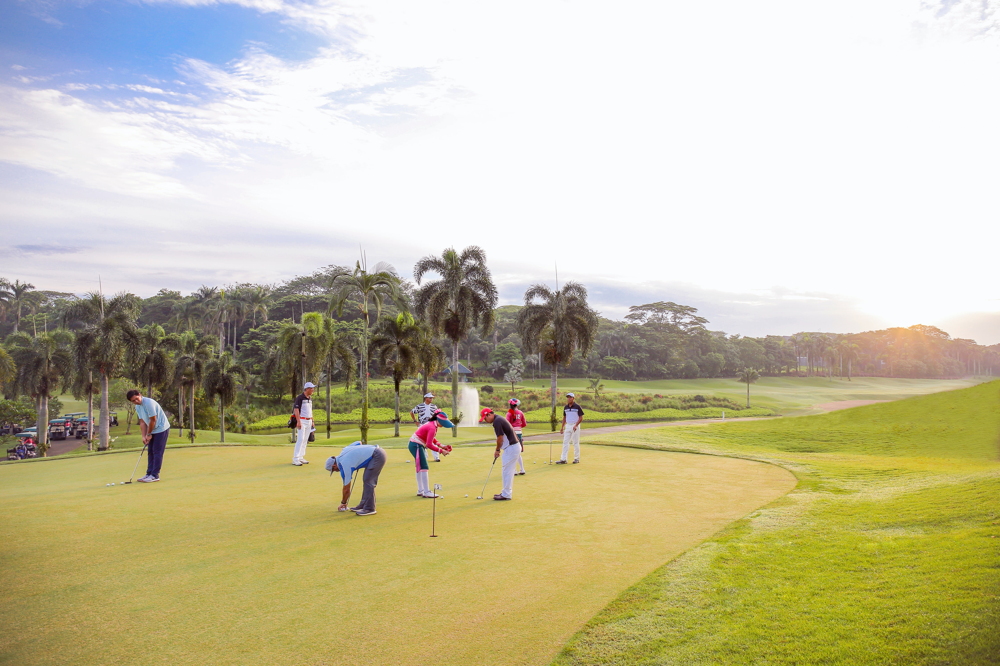

Events at Pleasure Island are renowned for great fun, great food, and a great experience of our local culture - all year round! Residents, neighbors, and visitors attend Kure Beach and Carolina Beach events year after year, planning their calendars around big festivals including the Seafood Blues and Jazz Festival, the Beach Music Festival, or the Chowder Cook-Off.
2nd Annual Pleasure Island Golf Tournament
March 24, 2022
36th Annual Carolina Beach Music Festival
June 4, 2022

Pets in the Park
October 8, 2022